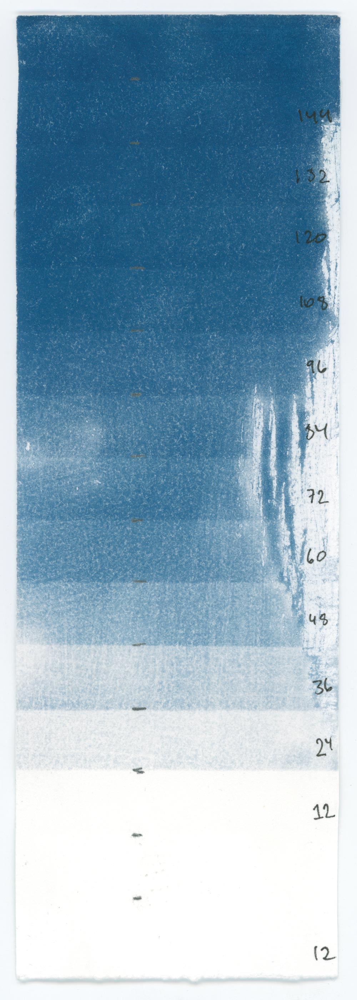
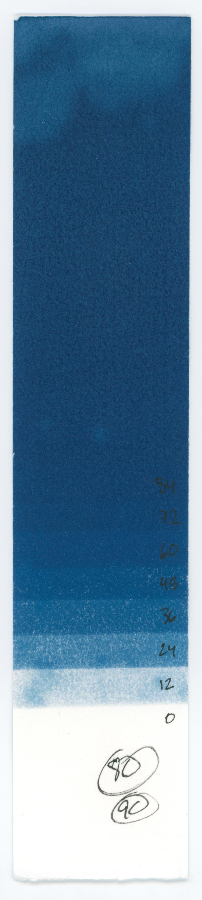
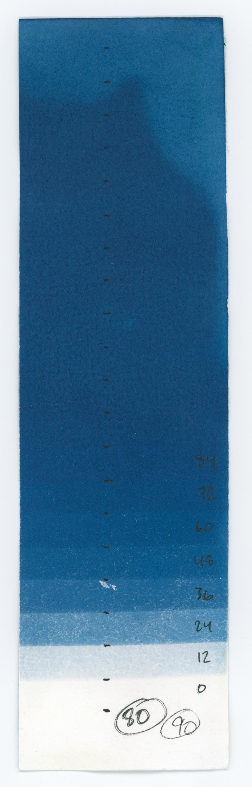
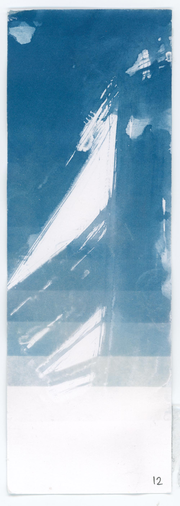
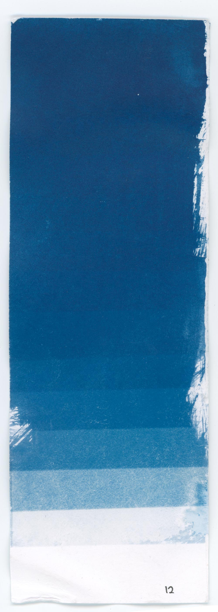
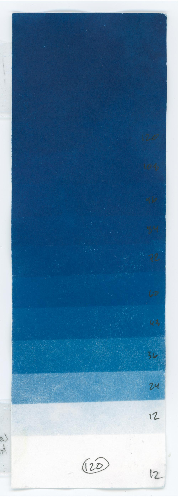
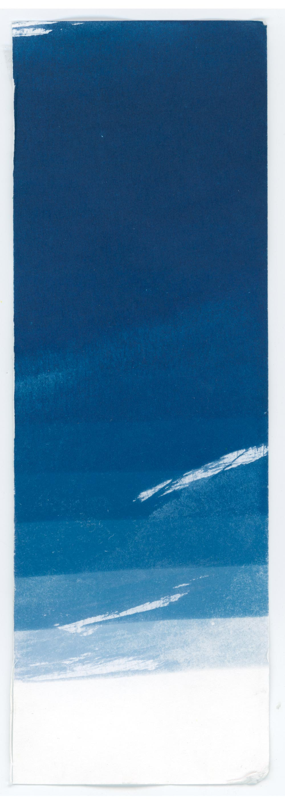
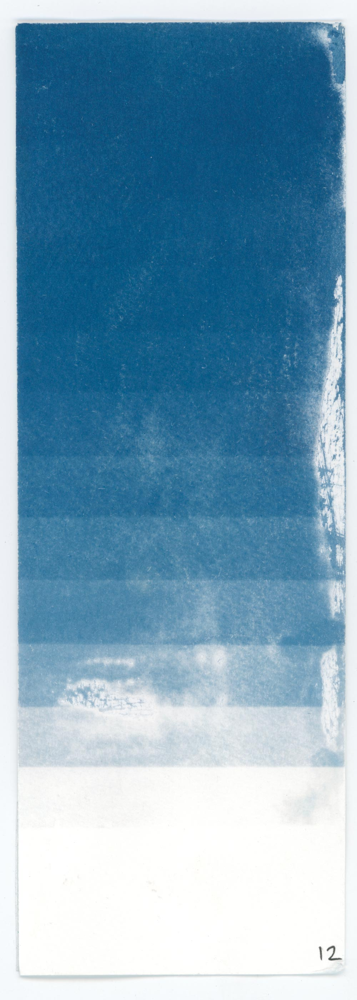
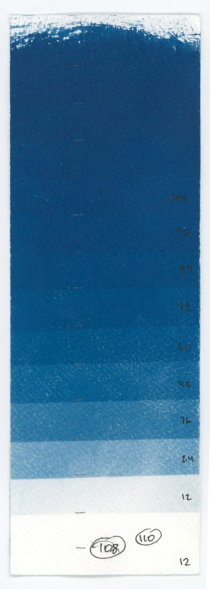
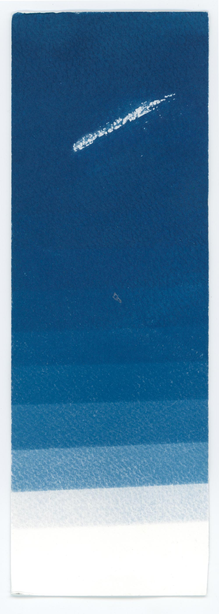

The following are a collection of tests and samples towards making cyanotype prints
The notes on this page are more concerned with the technical aspects of printing photographs instead of the artistic intent and meaning behind them. The basic premise on which I’m going is this: if I can take care of all technical considerations such that I no longer have to worry print quality, then I am free to experiment as much as want artiscally later. In other words, I want to do the heavy lifting of becoming proficient at printing cyanotypes in the beginning so I can make prints easily and quickly later.
The first problem is cyanotype chemicals are highly sensitive to alkali substances in the paper, which is typically calcium carbonate. Calcium carbonate acts as a “buffer” for archival paper. Therefore, the best paper will be unbuffered paper. However, unbuffered paper is very rare and often expensive. A possible solution is to take buffered paper and treat it with acid. (See Appendix Part A)
See Appendix Part B for more notes about papers
The first step in knowing how to print cyanotypes is determining the ideal exposure time, which is the the minimum time needed such that any additional exposure will not make the print any darker. Getting the ideal exposure time correct follows the same principle as creating test strips with regular silver darkroom printing. Once we find this time, it will be easier to manipulate the highlights and midtones of an image. (See Appendix C for how to make test strips.)
The following table will shows comparisons between paper that is:
Rives BFK Printmaking (90 seconds) |
|||||
|  |  | ||||
Untreated |
Acid pre-wash |
||||
Legion Stonehenge Printmaking (90 seconds) |
|||||
Missing |
 | ||||
Untreated |
Acid pre-wash |
||||
Strathmore 300 Series Bristol (84 seconds) |
|||||
|  |  | ||||
Untreated |
Acid pre-wash |
||||
Canson XL Bristol (120 seconds) |
|||||
|  |  | ||||
Untreated |
Acid pre-wash |
Delayed printing |
|||
Canson Montval Watercolor (120 seconds) |
|||||
|  |  |  | |||
Untreated |
Acid pre-wash |
Delayed printing |
|||
Conclusions
Paper Name |
Variant |
Weight (gsm) |
Buffer |
Color |
Durability |
Price |
Notes |
|---|---|---|---|---|---|---|---|
Rives BFK Printmaking |
White |
250 |
Yes |
White |
4.5 |
4.0 |
The front side is the rougher side |
Legion Stonehenge Printmaking |
White |
165 |
Yes |
White |
4.0 |
3.5 |
The front side is the rougher side |
Strathmore 300 Series Bristol |
Smooth |
270 |
Yes |
White |
2.5 |
2.5 |
Comes in 3 grades: 300, 400, 500 |
Canson XL Bristol |
Smooth |
260 |
Yes |
Very white |
3.0 |
2.5 |
Comes in 2 versions: (un)recycled |
Canson Montval Watercolor |
Block |
300 |
Yes |
Natural white |
3.5 |
3.0 |
Very textured |
To achieve consistency in printing, we have to find out how long to stick coated papers under the UV lights. We can think of this problem as, “What is the minimum time do I have to expose this paper until I can achieve the maximum possible darkness?” If you do not expose the paper long enough, you will never get the full range of tones from light to dark. However, if you expose the paper for too long, then all the midtones of the paper will appear too dark.